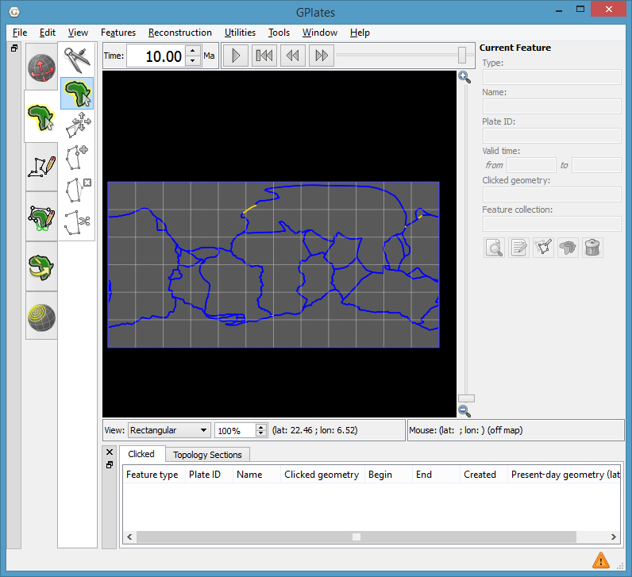
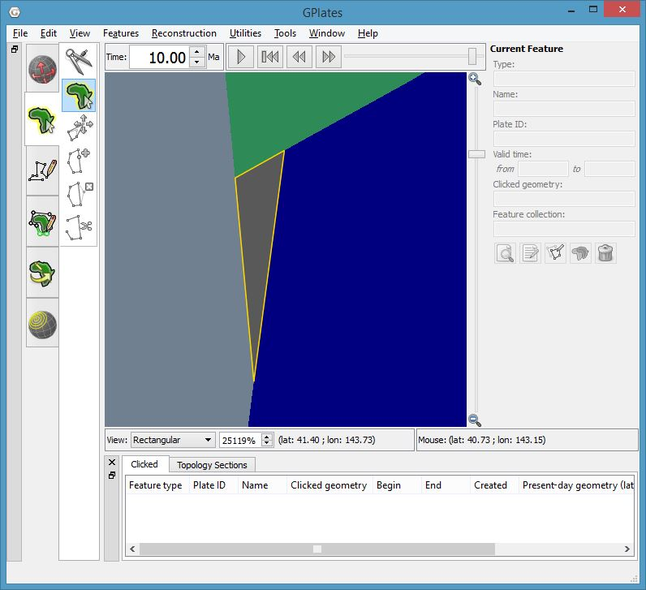
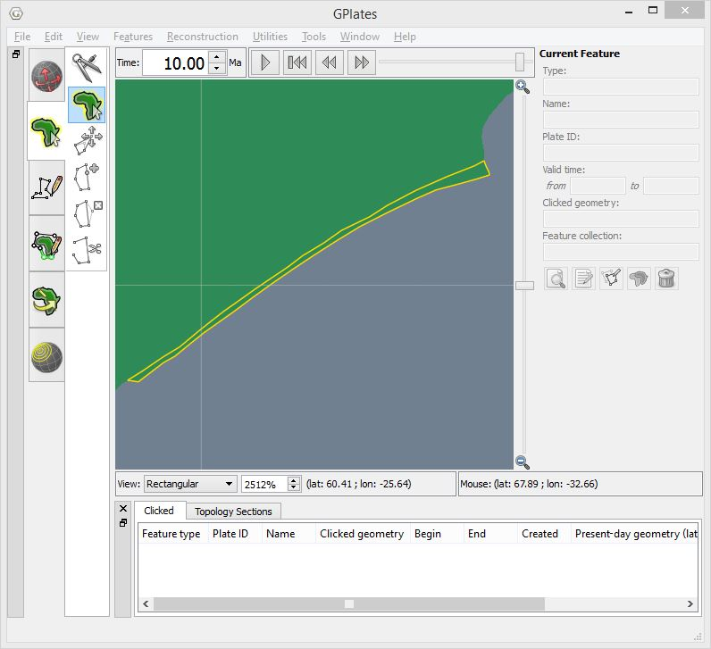

Find gaps and overlaps in global topological boundaries
This example resolves topological plate polygons (and deforming networks) over a series of geological times, and detects any gaps and overlaps in their coverage of the globe.
The sub-segments beside a gap or an overlap are written to a file for each time. The files can be loaded into GPlates, to see where the gaps and overlaps are alongside the dynamic plate polygons.
There is a gap or an overlap where:
an area of the globe is not covered by a topological boundary or network, or
two (or more) topological boundary polygons overlap in an area of the globe.
A gap is also reported where a boundary is made of two identical boundary sections, one used by each of the neighbouring topological boundaries. There should be only one section, shared by both.
A deforming network that lies over a topological boundary polygon is not an overlap. Networks usually do overlay the rigid plates.
Data files
topologies.gpmlTopological plate polygon features, intended to cover the globe. There can also be deforming network features, which can overlay the plate polygons.
rotations.rotA rotation file. It must contain rotations for the plate IDs of the topological features.
Files of these kinds are in the GPlates sample data.
Sample code
import pygplates
# Create a topological model from the topological plate polygon features (can also include deforming networks)
# and rotation file(s).
topological_model = pygplates.TopologicalModel('topologies.gpml', 'rotations.rot')
# A point-in-polygon test counts a point within about 9 metres (1.4e-6 radians) of a polygon's outline as
# being on the outline, and so inside the polygon. So a test point beside a network's edge must be further
# away than that, or it would be found inside the network itself, and no gap beside a network would ever be
# found. The test point is 10 times that distance (about 90 metres) off the sub-segment.
TEST_POINT_DISTANCE_RADIANS = 10 * 1.4e-6
def is_side_covered(topological_snapshot, shared_sub_segment, side):
"""Whether a resolved plate or network contains a point just off one side ('left' or 'right') of a shared sub-segment."""
# Use the middle of the sub-segment's longest arc (an arc of zero length has no direction).
arcs = shared_sub_segment.get_resolved_geometry().get_segments()
arc = max(arcs, key=lambda arc: arc.get_arc_length())
if arc.is_zero_length():
return True # Too short to test, so don't report it.
# An arc's great circle normal points to its left (when following the sub-segment's vertices).
distance = TEST_POINT_DISTANCE_RADIANS if side == 'left' else -TEST_POINT_DISTANCE_RADIANS
test_vector = pygplates.Vector3D(*arc.get_arc_point(0.5).to_xyz()) + arc.get_great_circle_normal() * distance
test_point = pygplates.PointOnSphere(*test_vector.to_xyz(), normalise=True)
# Is the test point inside any resolved plate or network (whether or not it shares the sub-segment)?
test_point_location = topological_snapshot.get_point_locations([test_point])[0]
return not test_point_location.not_located_in_resolved_topology()
# Our geological times will be from 0Ma to 'num_time_steps' Ma (inclusive) in 1 My intervals.
num_time_steps = 140
# 'time' = 0, 1, 2, ... , 140
for time in range(num_time_steps + 1):
# Get a snapshot of our resolved topologies at the current 'time'.
topological_snapshot = topological_model.topological_snapshot(time)
# Extract the boundary sections between our resolved topological plate polygons (and deforming networks) from the current snapshot.
shared_boundary_sections = topological_snapshot.get_resolved_topological_sections()
# We'll create a feature for any anomalous sub-segment we find.
anomalous_features = []
# The number of sub-segments that have a gap beside them, and the number where topologies overlap.
num_gap_sub_segments = 0
num_overlap_sub_segments = 0
# Iterate over the shared boundary sections.
for shared_boundary_section in shared_boundary_sections:
# Iterate over the sub-segments that actually contribute to a topology boundary.
for shared_sub_segment in shared_boundary_section.get_shared_sub_segments():
# The resolved topologies that share the sub-segment, and whether each one is on the left side
# of the sub-segment (as opposed to the right side).
sharing_resolved_topologies = shared_sub_segment.get_sharing_resolved_topologies()
resolved_topology_on_left_flags = shared_sub_segment.get_sharing_resolved_topology_on_left_flags()
# Count the plates, and the deforming networks, on each side of the sub-segment.
num_plates = {'left': 0, 'right': 0}
num_networks = {'left': 0, 'right': 0}
for index, sharing_resolved_topology in enumerate(sharing_resolved_topologies):
side = 'left' if resolved_topology_on_left_flags[index] else 'right'
if isinstance(sharing_resolved_topology, pygplates.ResolvedTopologicalNetwork):
num_networks[side] += 1
else:
num_plates[side] += 1
# Two (or more) plates on the same side of the sub-segment overlap each other, and so do two networks.
# One plate and one network on the same side do not, since a network can overlay a plate.
is_overlap = (num_plates['left'] > 1 or num_plates['right'] > 1 or
num_networks['left'] > 1 or num_networks['right'] > 1)
# A side of the sub-segment that no plate or network shares is a gap. Except where only networks share
# the sub-segment: then that side can be the interior of a plate (that a network overlays), so test it.
is_plate_boundary = num_plates['left'] + num_plates['right'] > 0
is_gap = False
for side in ('left', 'right'):
if num_plates[side] + num_networks[side] == 0:
if is_plate_boundary or not is_side_covered(topological_snapshot, shared_sub_segment, side):
is_gap = True
if is_gap or is_overlap:
# We keep track of any anomalous sub-segment features, and describe what was found beside each one.
anomalous_feature = shared_sub_segment.get_resolved_feature()
if is_gap and is_overlap:
anomalous_feature.set_description('gap and overlap')
elif is_gap:
anomalous_feature.set_description('gap')
else:
anomalous_feature.set_description('overlap')
anomalous_features.append(anomalous_feature)
if is_gap:
num_gap_sub_segments += 1
if is_overlap:
num_overlap_sub_segments += 1
print(f'Time {time}Ma: sub-segments beside a gap: {num_gap_sub_segments}, '
f'sub-segments beside an overlap: {num_overlap_sub_segments}')
# If there are any anomalous features for the current 'time' then write them to a file
# so we can load them into GPlates and see where the errors are located.
if anomalous_features:
# Put the anomalous features in a feature collection so we can write them to a file.
anomalous_feature_collection = pygplates.FeatureCollection(anomalous_features)
# Create a filename (for anomalous features) with the current 'time' in it.
anomalous_features_filename = f'anomalous_sub_segments_at_{time}Ma.gpml'
# Write the anomalous sub-segments to a new file.
anomalous_feature_collection.write(anomalous_features_filename)
Details
A topological model is created from the topological features
and the rotation file. The topological features can be plate polygons, deforming networks or both.
Here there is one file of topological features and one rotation file. More than one of each can be
given, and a pygplates.RotationModel can be given in place of the rotation files.
# Create a topological model from the topological plate polygon features (can also include deforming networks)
# and rotation file(s).
topological_model = pygplates.TopologicalModel('topologies.gpml', 'rotations.rot')
Note
The pygplates.TopologicalModel is created outside the time loop, since it does not depend on time.
pygplates.TopologicalModel.topological_snapshot() resolves the topological features at the
current time, and returns the result as a pygplates.TopologicalSnapshot.
# Get a snapshot of our resolved topologies at the current 'time'.
topological_snapshot = topological_model.topological_snapshot(time)
pygplates.TopologicalSnapshot.get_resolved_topological_sections() returns the boundary
sections of the resolved topologies in the snapshot. By default these are the sections on the
boundaries of both the resolved plate polygons (pygplates.ResolvedTopologicalBoundary) and
the resolved deforming networks (pygplates.ResolvedTopologicalNetwork).
# Extract the boundary sections between our resolved topological plate polygons (and deforming networks) from the current snapshot.
shared_boundary_sections = topological_snapshot.get_resolved_topological_sections()
These boundary sections are used because each of
their sub-segments has a list of the topologies that share it.
Not all of the geometry of a boundary section feature is on the boundary of a topology. For
example, the ends of a section that extend past its neighbouring sections are clipped off.
pygplates.ResolvedTopologicalSection.get_shared_sub_segments() returns the parts that are on
a boundary.
# Iterate over the sub-segments that actually contribute to a topology boundary.
for shared_sub_segment in shared_boundary_section.get_shared_sub_segments():
pygplates.ResolvedTopologicalSharedSubSegment.get_sharing_resolved_topologies() returns the
list of topologies that share a sub-segment.
pygplates.ResolvedTopologicalSharedSubSegment.get_sharing_resolved_topology_on_left_flags()
returns a list in the same order, with True for each topology that is on the left side of the
sub-segment and False for each one on the right. The left side is the one on the left when
following the points of the sub-segment from its first to its last.
# The resolved topologies that share the sub-segment, and whether each one is on the left side
# of the sub-segment (as opposed to the right side).
sharing_resolved_topologies = shared_sub_segment.get_sharing_resolved_topologies()
resolved_topology_on_left_flags = shared_sub_segment.get_sharing_resolved_topology_on_left_flags()
If the resolved topologies cover the globe with no gaps or overlaps, then each side of a sub-segment has one resolved boundary (a plate) on it, or one resolved network, or one of each.
So it is not enough to count the topologies that share a sub-segment:
A subduction zone whose overriding plate has a deforming network lying over it is shared by three topologies (two plates and the network), with nothing wrong.
Two topologies sharing a sub-segment could both be on the same side of it, which is an overlap on that side and a gap on the other.
Instead the script counts the plates and the networks separately, on each side.
# Count the plates, and the deforming networks, on each side of the sub-segment.
num_plates = {'left': 0, 'right': 0}
num_networks = {'left': 0, 'right': 0}
for index, sharing_resolved_topology in enumerate(sharing_resolved_topologies):
side = 'left' if resolved_topology_on_left_flags[index] else 'right'
if isinstance(sharing_resolved_topology, pygplates.ResolvedTopologicalNetwork):
num_networks[side] += 1
else:
num_plates[side] += 1
There is an overlap if either side of the sub-segment has more than one plate, or more than one network.
# Two (or more) plates on the same side of the sub-segment overlap each other, and so do two networks.
# One plate and one network on the same side do not, since a network can overlay a plate.
is_overlap = (num_plates['left'] > 1 or num_plates['right'] > 1 or
num_networks['left'] > 1 or num_networks['right'] > 1)
There is a gap if a side of the sub-segment has neither a plate nor a network on it.
For a sub-segment that a plate shares, the lists answer that. Plates (and the networks between them) cover the globe, so a side with nothing on it is a gap.
A sub-segment shared only by networks is different, because models use deforming networks in two ways:
In most recent models, networks overlay plates. The parts of a network’s boundary that cross a plate’s interior have the network on one side only, with the plate lying beneath on both sides. But the plate doesn’t share those sub-segments (they aren’t part of its boundary), so it isn’t in the lists, and the other side looks empty when it isn’t.
In older models, networks abut plates (and each other, such as two rift networks along a rift axis), and no plate lies beneath them. There a side with nothing on it is a gap.
The lists (which hold only the topologies that share a sub-segment) can’t tell the two apart. So for
a side of such a sub-segment with nothing on it, the script tests a point just off that side, and
reports a gap only if no plate or network contains it.
pygplates.TopologicalSnapshot.calculate_plate_boundary_statistics() does the same, when it
finds nothing sharing a side of a sub-segment.
# A side of the sub-segment that no plate or network shares is a gap. Except where only networks share
# the sub-segment: then that side can be the interior of a plate (that a network overlays), so test it.
is_plate_boundary = num_plates['left'] + num_plates['right'] > 0
is_gap = False
for side in ('left', 'right'):
if num_plates[side] + num_networks[side] == 0:
if is_plate_boundary or not is_side_covered(topological_snapshot, shared_sub_segment, side):
is_gap = True
The test point is in the middle of the sub-segment’s longest arc, moved off it along the arc’s great circle normal, which points to the left of the arc.
How far matters. A point-in-polygon test counts a point within about 9 metres (1.4e-6 radians) of a polygon’s outline as being on it, and so inside. So a test point closer than that to a network’s edge would be found inside the network itself, and a gap beside a network would never be found. The script uses 10 times that distance (about 90 metres), as the plate boundary statistics do. Don’t make it smaller.
pygplates.TopologicalSnapshot.get_point_locations() searches every resolved plate and
network, whether or not it shares the sub-segment.
# A point-in-polygon test counts a point within about 9 metres (1.4e-6 radians) of a polygon's outline as
# being on the outline, and so inside the polygon. So a test point beside a network's edge must be further
# away than that, or it would be found inside the network itself, and no gap beside a network would ever be
# found. The test point is 10 times that distance (about 90 metres) off the sub-segment.
TEST_POINT_DISTANCE_RADIANS = 10 * 1.4e-6
def is_side_covered(topological_snapshot, shared_sub_segment, side):
"""Whether a resolved plate or network contains a point just off one side ('left' or 'right') of a shared sub-segment."""
# Use the middle of the sub-segment's longest arc (an arc of zero length has no direction).
arcs = shared_sub_segment.get_resolved_geometry().get_segments()
arc = max(arcs, key=lambda arc: arc.get_arc_length())
if arc.is_zero_length():
return True # Too short to test, so don't report it.
# An arc's great circle normal points to its left (when following the sub-segment's vertices).
distance = TEST_POINT_DISTANCE_RADIANS if side == 'left' else -TEST_POINT_DISTANCE_RADIANS
test_vector = pygplates.Vector3D(*arc.get_arc_point(0.5).to_xyz()) + arc.get_great_circle_normal() * distance
test_point = pygplates.PointOnSphere(*test_vector.to_xyz(), normalise=True)
# Is the test point inside any resolved plate or network (whether or not it shares the sub-segment)?
test_point_location = topological_snapshot.get_point_locations([test_point])[0]
return not test_point_location.not_located_in_resolved_topology()
If a gap or an overlap was found, the script records the sub-segment’s feature, with a description saying which was found (it can be both).
if is_gap or is_overlap:
# We keep track of any anomalous sub-segment features, and describe what was found beside each one.
anomalous_feature = shared_sub_segment.get_resolved_feature()
if is_gap and is_overlap:
anomalous_feature.set_description('gap and overlap')
elif is_gap:
anomalous_feature.set_description('gap')
else:
anomalous_feature.set_description('overlap')
anomalous_features.append(anomalous_feature)
Finally, if any anomalous features were found at the current time, they are written to a file
with that time in its name.
# Create a filename (for anomalous features) with the current 'time' in it.
anomalous_features_filename = f'anomalous_sub_segments_at_{time}Ma.gpml'
# Write the anomalous sub-segments to a new file.
anomalous_feature_collection.write(anomalous_features_filename)
Visualising gaps and overlaps in GPlates
The output files, such as anomalous_sub_segments_at_10Ma.gpml, can be loaded into
GPlates to see where the topological errors are on the globe.

GPlates screenshot showing anomalous sub-segments (yellow) and dynamic plate polygons (blue) at 10Ma.
The following two screenshots show a zoomed-in view of a gap and an overlap.

GPlates screenshot showing zoomed-in view of a gap in dynamic polygon coverage (outlined in yellow) at 10Ma.

GPlates screenshot showing zoomed-in view of an overlap in dynamic polygon coverage (outlined in yellow) at 10Ma.
See also
Primer: Topological snapshot
Reference:
pygplates.TopologicalModel,pygplates.TopologicalSnapshot.get_resolved_topological_sections(),pygplates.ResolvedTopologicalSection.get_shared_sub_segments(),pygplates.ResolvedTopologicalSharedSubSegment.get_sharing_resolved_topologies(),pygplates.ResolvedTopologicalSharedSubSegment.get_sharing_resolved_topology_on_left_flags()Sample code: Find the total length of ridges and subduction zones, Find overriding plate of closest subducting line